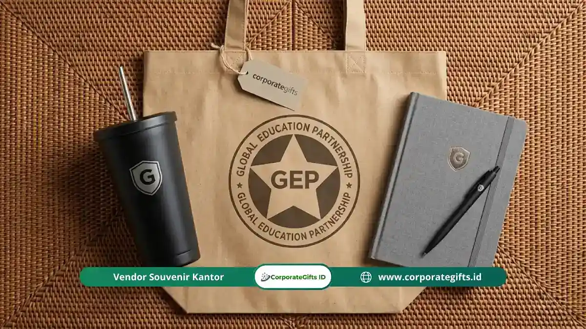

Corporate Gifts ID - Souvenir mitra sekolah adalah cinderamata resmi yang diberikan pihak institusi pendidikan kepada instansi pemerintah, perusahaan mitra Dunia Usaha dan Dunia Industri (DUDI), perguruan tinggi, maupun lembaga non-pemerintah yang menjalin kerja sama formal.
Keberadaan cinderamata institusional ini memegang peranan krusial sebagai simbol penghargaan resmi, pengingat komitmen kemitraan, serta media penguatan reputasi merek sekolah (institutional branding) yang elegan. Memilih cinderamata yang representatif terbukti mempererat hubungan kerja sama jangka panjang sekaligus mencerminkan tata kelola lembaga yang profesional.
Poin Kunci Panduan Souvenir Mitra Sekolah:
- Eksklusivitas Institusi: Souvenir kemitraan dikhususkan untuk lembaga berstatus MoU/PKS resmi, berbeda dari merchandise siswa biasa.
- Nilai Representatif Tinggi: Produk mencerminkan komitmen timbal balik dan integritas profesional kedua belah pihak.
- Kombinasi Fungsional & Simbolik: Menggabungkan plakat penghargaan untuk pajangan kantor dengan merchandise harian berlogo.
- Efektivitas Anggaran: Alokasi biaya disesuaikan dengan bobot strategis kemitraan demi imbal hasil relasi yang optimal.
Apa Itu Souvenir Mitra Sekolah?
Secara yuridis dan administratif, souvenir mitra sekolah adalah produk cinderamata yang diserahkan dalam kerangka nota kesepahaman (Memorandum of Understanding / MoU) atau Perjanjian Kerja Sama (PKS). Berbeda dengan souvenir promosi umum atau cinderamata kelulusan siswa, produk ini dirancang dengan standar kualitas lebih tinggi serta memuat identitas visual institusi secara formal.
Pihak yang menerima cinderamata kemitraan ini meliputi kantor dinas pendidikan, perusahaan penyedia lokasi magang/PKL (DUDI), universitas mitra pembina, organisasi nirlaba pemberi beasiswa, hingga lembaga sertifikasi profesi. Penyerahan cinderamata umumnya dilakukan pada sesi seremonial resmi penandatanganan kerja sama, audiensi pimpinan, maupun agenda perpisahan program tahunan.
Menurut data survei Promotional Products Association International (PPAI), sebanyak 83% penerima merchandise korporat resmi dapat mengingat identitas institusi pemberi secara jelas hingga lebih dari 12 bulan. Hal ini membuktikan bahwa cinderamata kemitraan yang dirancang dengan baik merupakan investasi relasi yang sangat berharga dengan biaya yang terukur.
Jenis Souvenir yang Cocok untuk Mitra Sekolah
Dalam katalog resmi CorporateGifts.ID, kami membagi cinderamata mitra institusi ke dalam empat kategori utama sesuai fungsi dan tingkat kepentingannya:
1. Plakat dan Trofi Penghargaan Seremonial
Plakat merupakan pilihan cinderamata paling formal dan memiliki nilai pajang permanen di kantor perwakilan mitra:
- Plakat Akrilik Grafir: Memberikan tampilan modern, bersih, dan elegan dengan teknik potong laser presisi.
- Plakat Kayu Kombinasi Logam Kuningan: Memberikan kesan klasik, mewah, dan berwibawa untuk instansi kementerian atau universitas ternama.
- Trofi Kristal 3D: Pilihan ultra-premium untuk perayaan lustrum kemitraan satu dekade atau apresiasi mitra donor utama.
2. Merchandise Fungsional Custom Berlogo
Merchandise berdaya guna harian menjamin identitas visual sekolah selalu terlihat dalam rutinitas kerja tim mitra:
- Tumbler stainless steel vacuum SUS 304 tahan suhu panas dan dingin.
- Tote bag kanvas premium beresleting untuk membawa berkas kerja dan modul.
- Buku agenda kerja hardcover A5 dengan pita pembatas dan pulpen metal grafir.
- Flashdisk kartu custom kapasitas 16 GB - 64 GB berisi profil digital sekolah dan dokumentasi kemitraan.

Kombinasi totebag kanvas ramah lingkungan dan tumbler grafir logo sebagai merchandise fungsional untuk perwakilan mitra sekolah.
3. Produk Premium untuk Mitra Strategis
Untuk jajaran pimpinan direksi perusahaan mitra atau pejabat dinas terkait, cinderamata berkelas tinggi menjadi media apresiasi yang tepat:
- Jam meja kayu digital multifungsi dengan stasiun pengisi daya nirkabel (wireless charger).
- Set pena eksekutif berlapis kromium dalam kotak beludru eksklusif.
- Powerbank fast charging 10.000 mAh berlapis kulit sintetis dengan logo deboss halus.
4. Set Hadiah Eksklusif Bertemakan Sekolah
Menghadirkan beberapa produk dalam satu kesatuan kemasan hardbox bertema warna almamater sekolah menciptakan impresi mewah sejak pertama kali dibuka:
- Paket gift set kemitraan berisi kombinasi buku agenda, pulpen metal, tumbler grafir, dan pin lencana berlogo institusi.
- Penyertaan kartu ucapan terima kasih berpita emas yang ditandatangani langsung oleh Kepala Sekolah atau Ketua Yayasan.
Tabel Matriks Kategori Souvenir Berdasarkan Tingkatan Mitra
Agar penganggaran dana BOS atau komite sekolah lebih terarah dan proporsional, gunakan panduan matriks kemitraan berikut:
| Tingkatan Kemitraan | Kategori Penerima | Rekomendasi Cinderamata | Estimasi Budget per Unit | Momen Penyerahan |
|---|---|---|---|---|
| Mitra Strategis Utama (Tier 1) | Pimpinan DUDI, Kementerian, Rektorat Universitas | Plakat kayu kuningan, gift set hardbox kulit, trofi kristal | Rp200.000 - Rp450.000+ | Seremoni MoU, Puncak Dies Natalis, Kunjungan VIP |
| Mitra Operasional (Tier 2) | Mentor magang industri, trainer vokasi, sekolah binaan | Tumbler stainless SUS 304, agenda kerja A5, flashdisk kartu | Rp75.000 - Rp150.000 | Penutupan program PKL, workshop kurikulum bersama |
| Mitra Pendukung (Tier 3) | Peserta seminar bersama, panitia asosiasi guru mitra | Tote bag kanvas, pouch serbaguna, mug keramik, payung lipat | Rp35.000 - Rp75.000 | Seminar kemitraan, studi banding antar sekolah |
Cara Memilih Souvenir Mitra Sekolah yang Tepat
Menjaga reputasi lembaga pendidikan di mata mitra menuntut ketelitian dalam proses seleksi souvenir. Terapkan empat pilar pertimbangan utama berikut:
- Sesuaikan dengan Bobot Hubungan Kemitraan: Jangan menyamakan cinderamata untuk pimpinan perusahaan multinasional dengan peserta kunjungan umum. Skalakan nilai kemasan dan produk secara berkeadilan.
- Prioritaskan Material Tahan Lama dan Berkualitas: Cinderamata yang cepat rusak atau pudar warnanya akan memberikan citra buruk bagi mutu sekolah. Pilihlah material solid seperti kayu jati, akrilik bening kelas A, atau logam anti karat.
- Terapkan Penataan Logo yang Proporsional dan Elegan: Hindari mencetak teks informasi yang terlalu padat. Cukup cantumkan logo resmi sekolah, nama instansi mitra, tajuk kemitraan, serta tahun serah terima dengan teknik laser engraving atau UV print definisi tinggi.
- Perhatikan Aspek Fungsionalitas Nyata: Barang yang dapat dipakai di ruang kerja meja kantor memastikan pesan kedekatan antara sekolah dan mitra tetap terjalin setiap hari.
Kesalahan Umum dalam Pengadaan Souvenir Mitra Sekolah
Hindari 5 kekeliruan fatal yang sering dialami panitia humas sekolah dalam pengadaan cinderamata:
- Memilih Produk Murahan Tanpa Standar QC: Tergiur harga sangat murah di marketplace tanpa verifikasi ketebalan bahan dan presisi sablon.
- Desain Logo Pecah (Low Resolution): Menyerahkan file logo beresolusi rendah kepada vendor sehingga hasil cetak tampak buram dan tidak profesional.
- Pemesanan Terlalu Dekat dengan Hari H (Rush Order): Mengabaikan waktu produksi yang berakibat pada keterlambatan pengiriman saat seremoni MoU berlangsung.
- Mengabaikan Kualitas Kemasan (Packaging): Memberikan cinderamata plakat atau mug tanpa kotak pelindung eksklusif yang rapi.
- Vendor Tanpa Kelengkapan Berkas B2B: Memilih pengrajin perorangan yang tidak dapat menerbitkan kuitansi resmi bertanda tangan, surat penawaran harga (SPH), dan e-Faktur Pajak resmi bagi bendahara sekolah.
Studi British Promotional Merchandise Association (BPMA) menunjukkan bahwa 79% instansi merasa memiliki persepsi positif yang jauh lebih tinggi terhadap lembaga yang memberikan merchandise beridentitas rapi dan berkualitas.
Kesimpulan dan Konsultasi Pengadaan
Pengadaan souvenir mitra sekolah bukan sekadar pengeluaran seremonial belaka, melainkan investasi strategis dalam membangun jejaring kelembagaan jangka panjang. Cinderamata yang disiapkan dengan teliti dan berkualitas tinggi akan menjadi duta visual yang terus mengharumkan nama institusi pendidikan Anda di ruang kerja para mitra.
Melalui layanan pengadaan B2B CorporateGifts.ID, kami siap membantu sekolah, madrasah, yayasan, maupun perguruan tinggi Anda dalam merancang souvenir kemitraan yang elegan, lengkap dengan simulasi mockup desain gratis dan kelengkapan administrasi faktur pajak resmi.
Pertanyaan Seputar Souvenir Mitra Sekolah (FAQ)
Disclaimer: Pilihan jenis cinderamata, estimasi anggaran, dan spesifikasi paket kemitraan sekolah dalam panduan ini dapat disesuaikan secara fleksibel dengan pedoman pengadaan dana instansi Anda bersama tim CorporateGifts.ID.